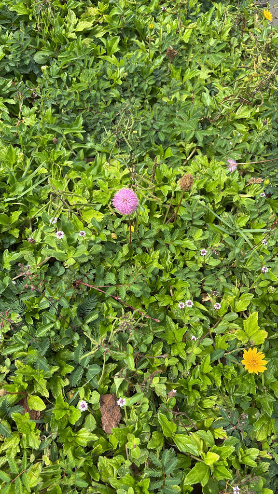

- Touch its leaves and they fold shut in seconds — a defensive response that confuses insects and startles almost everyone who walks past it.
- This native ground cover fixes its own nitrogen, improving the soil beneath it while it spreads.
- Pink powder-puff flowers feed butterflies all season.
- Unlike its aggressive non-native cousin, this Mimosa plays well with others and is increasingly recommended by Florida naturalists as a lawn alternative.
Native to most of Florida except the western portion of the Panhandle, and documented in Georgia, Arkansas, Texas, and states bordering the Gulf of Mexico. Most commonly found in moist open habitats, disturbed sites, and roadsides; also widely planted as an ornamental groundcover.
- A member of the Fabaceae family — the same family as Royal Poinciana, Coral Bean, and Peacock Flower also in the park. Closely related to the non-native sensitive plant (Mimosa pudica), but unlike that weedy relative, this one is a well-behaved Florida native.
- Touch a leaf. Go ahead. The leaves are sensitive to touch and fold up in response to the slightest contact — a defense mechanism called thigmonasty, thought to startle or deter insects and grazing animals. The response travels along the stem in a wave, with leaves folding sequentially like falling dominoes. This is one of the fastest plant movements in nature, happening in less than a second.
- Despite this dramatic defense, its roots form small nodules associated with nitrogen-fixing bacteria that actively add nitrogen to the soil — making it one of the few groundcovers that actually improves the ground it grows in rather than depleting it.
- The long taproots make it exceptionally drought tolerant but also nearly impossible to pull out once established. For a plant that barely reaches your ankle, it punches well above its weight ecologically.
- One practical note for visitors: this plant is a perennial but not an evergreen. It goes semi-dormant in fall and winter, and the mat may look sparse or bare from November through February. That's normal — it comes back strong in spring.
The Sunshine Mimosa is a double-duty pollinator plant that works at ground level. Its pink powder-puff flowers are pollinated primarily by bees — including native bumble bees and honeybees — while butterflies visit for nectar throughout the blooming season. More significantly, it is the larval host plant for the Little Sulphur butterfly (Pyrisitia lisa), whose caterpillars feed on the foliage.
White-tailed deer also browse the plant in its native range. As a nitrogen-fixing legume that improves the soil beneath it while providing a dense mat of cover, it supports the broader ground-level insect community more than most groundcovers its size.
Spreads by rhizomes that produce long taproots at the nodes. Also reproduces by seed.
Showy pink to lavender pompom-like flowers, pollinated mainly by bees but attracting butterflies as well, blooming spring through summer. Each inflorescence resembles a small pom-pom about one inch in diameter, with prominent pink stamens topped with yellow anthers. Larval host plant for the Little Sulphur butterfly (Pyrisitia lisa).
Rough, flattened pods approximately one inch long, turning from green to brown at maturity, containing seeds.
Feathery, bluish-green, bipinnate — leaflets arranged in sensitive pairs that fold shut on contact within seconds.
Reddish, spreading and sprawling, rooting at nodes to form a dense low mat.
Touch a leaf gently and watch it fold shut — the thigmonastic response is immediate and unmistakable. The pink pompom flowers stand about 6 inches above the mat of foliage from spring through summer. Look for the dense, fern-like mat hugging the ground with reddish stems. In fall and winter the foliage may be sparse or absent — the plant is dormant, not dead.
This isn't a food plant for people — the foliage is browsed by deer and cattle in its native range — but it's harmless, with no known toxicity to people or pets.


- © Randall Carter (CC-BY-NC), via iNaturalist
- © Franky McArthur (CC-BY-NC), via iNaturalist